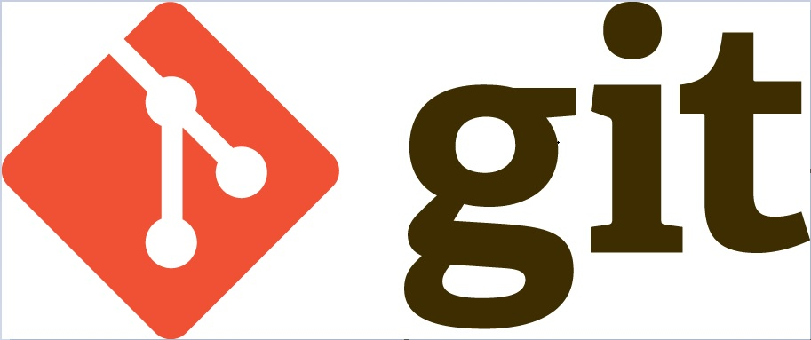
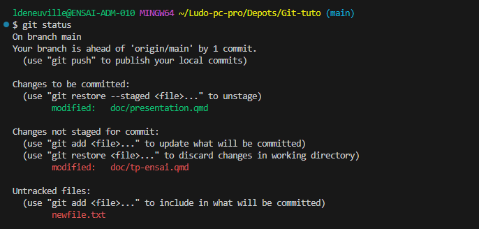

sequenceDiagram
Workspace ->> Staging index: add
Staging index ->> Local repository: commit
Local repository ->> Remote repository: push
Remote repository ->> Workspace: pull
Introduction à Git
Ludovic Deneuville
Introduction
- Outil indispensable
- Pas d’évaluation immédiate
- mais utilisé toute la scolarité et vie pro
Introduction
Vous faites parti d’une équipe de 5 personnes qui doit coder une application de jeux de cartes.
üòï Comment mettre en commun votre code ?
- Vous développez chacun de votre coté et à la fin, vous mettez tout en commun
- Vous envoyez vos programmes par mail
- Vous créez un dossier commun
üòÖ En cas d‚Äôerreur, comment revenir en arri√®re ?
Au programme
- üìå Versionner son code
- üíæ Historique des modifications
- üë∑ Travail en √©quipe
Pourquoi versionner ?
- Quelle est la bonne version ?
- Comment faire pour revenir en arrière ?
- Qui a écrit ce code ? Quand ?
Pour connaitre la véritable dernière version
├─── Projet info
│ ├─── old
│ │ ├─── Rapport.txt
│ │ ├─── Rapport_new.txt
│ │ ├─── Rapport_v1.0.txt
│ │ └─── Rapport_v1.2.txt
│ ├─── Rapport_old.txt
│ ├─── Rapport_2022.05.15.txt
‚îÇ ‚îî‚îÄ‚îÄ‚îÄ Rapport_2022.05.15_new.txtüòï Quelle est la bonne version du fichier ?
üòä Un seul fichier + l‚Äôhistorique des modifications
├───Projet info
│ └───Livrables
│ └───Rapport.txt
Date Heure Auteur Message commit
---- ----- ------ --------------
2022.05.29 23h58 bianca "Version finale"
2022.05.29 23h40 archibald "j'avais oublié l'intro"
2022.05.29 21h32 tryphon "ajout partie 2"
2022.05.29 20h25 bianca "v1.1"
2022.05.29 20h12 tryphon "Création du rapport"
Ancien code commenté
Vous souhaitez passer de R-base à ggplot2 pour votre graphique.
analyse.R
library(ggplot2)
data <- data.frame(x = seq(-4, 4, length=100))
data$y <- dnorm(data$x)
# plot(data$x, data$y, type="l", lwd=2, col="blue",
# main="Densité de la loi normale centrée réduite",
# xlab="x", ylab="Densité")
# abline(h=0, col="gray")
ggplot(data, aes(x = x, y = y)) +
geom_line(color = "blue", size = 1) +
ggtitle("Densité de la loi normale centrée réduite") +
xlab("x") +
ylab("Densité") +
theme_minimal()analyse.R - Commit 05016ab - Date 2024.06.02 - Author tryphon
analyse.R - Commit f97f766 - Date 2024.06.04 - Author bianca
La solution
Git
Historique
- Créé par Linus Torvalds en 2005
- Pour gérer le développement du noyau Linux
- Le standard incontournable de la gestion de versions
- Anciens outils : CVS, SVN
Logiciel
- Logiciel Libre, Open source
- Gratuit
- Décentralisé
Note
üò® Git s‚Äôutilise majoritairement en ligne de commande dans un terminal Git Bash.
üòÖ Pas de panique, quelques commandes suffisent pour travailler avec Git.
Il existe aussi des interfaces graphiques mais elles sont souvent imparfaites et sources d’erreur.
Késako
- Git
- Logiciel de gestion de versions
- Git Bash
- Terminal pour écrire des commandes git
- GitHub / GitLab
- Plateforme de développement collaboratif
- Héberge des dépôts Git
- Propose d’autres fonctionnalités (CI/CD, wiki, gestion des incidents…)
Git Bash
- Terminal de commande
- Plusieurs manières de lancer (Menu Windows, clic droit, inclus dans VSCode)

Commandes Unix
| Commande | Description |
|---|---|
ls (ou ll) |
Liste le contenu d’un répertoire |
pwd |
Affiche le répertoire courant |
cd <directory> |
Change le répertoire de travail courant |
mv <src_file> <dest_file> |
Déplace des fichiers ou des répertoires |
cp <src_file> <dest_file> |
Copie un fichier ou un répertoire |
mkdir <directory> |
Crée un nouveau répertoire |
rm <file_or_dir> |
Supprime des fichiers ou des répertoires |
touch <filename> |
Crée un nouveau fichier vide |
cat <filename> |
Affiche le contenu d’un fichier |
grep <text> <filename> |
Rechercher dans un fichier |
| Commande | Signification |
|---|---|
ls (ou ll) |
list |
pwd |
print working directory |
cd <directory> |
change directory |
mv <src_file> <dest_file> |
move |
cp <src_file> <dest_file> |
copy |
mkdir <directory> |
make directory |
rm <file_or_dir> |
remove |
touch <filename> |
|
cat <filename> |
concatenate |
grep <text> <filename> |
global regular expression print |
Commandes Unix - Exemples
Pour chaque commande, de nombreuses options sont disponibles
ls *.py # liste tous les fichiers python du répertoire courant
ls *.py > a.txt # crée un fichier a.txt contenant le résultat de la commande
cd .. # se positionne dans le répertoire parent
cd ../projet/src # remonter dans le dossier parent puis aller dans projet puis src
cp /p/image.jpg . # copie le fichier image.jpg du disque P dans le dossier courant
./setup.sh # lance le programme setup.sh du répertoire courantTip
.: représente le dossier courant..: représente le dossier parent~: répertoire personnel de l’utilisateur (echo $HOME)
Copier-Coller
Warning
- CTRL + C et CTRL + V ne fonctionnent pas toujours !
- CTRL + C : stopper un processus (très utile)
2 possibilités pour coller du texte :
- Clic droit
- MAJ + INSERT
Versionner son code
Que versionne-t-on ?
- ✅ des fichiers de type texte (légers)
- ✅ du code source
- ❌ fichiers de données
- ❌ mots de passe
- ❌ outputs : logs, .pdf, .doc
Workflow
Créer un commit
2 étapes pour créer une nouvelle version :
git add <filename>- ajouter le fichier à l’index (i.e. dire à Git de suivre ce fichier)
git add .: pour ajouter tous les fichiers
git commit -m "<mon message>"
Exemple
Votre dépôt avant de commencer à coder.
Vous avez :
- modifié un fichier
- créé un nouveau fichier
Vous ajoutez les fichiers créés ou modifiés à l’index :
git add .
Vous créez un point de sauvegarde
git commit -m "feat: ajout de l'utilisation de velo"
{kind=link}
- vous venez de créer un nouveau commit
- il est possible de consulter les commits précédents
git checkout <commit_number>
Message du commit
üòî Ce n‚Äôest pas toujours √©vident de trouver un message court et explicite.
Tip
Utilisez un préfixe à votre message selon le pattern <type>: <sujet>:
doc:mise à jour documentairefeat:nouvelle fonctionnalitéfix:correctionrefactor:mise au propre du coderevert:retour arrièretest:Modification des tests
Retour arrière
Si finalement, vous n’avez pas envie de « commiter » vos modifications ?
| Commande | Description |
|---|---|
git restore <file> |
Annuler les modifications locales non indexées du fichier |
git reset <file> |
Desindexer un fichier |
git reset --hard |
Revenir à l’état du dernier commit, perdant toutes les modifications locales |
git stash |
Sauvegarder et remettre le working directory à l’état du dernier commit |
Caution
Attention avec les commandes contenant les mots force, hard…
Ignorer des fichiers
Le fichier .gitignore
.gitignore est un fichier présent à la racine du dépôt permettant de dire à Git quels fichiers il doit ignorer. Par exemple, s’il contient :
*.csv➡️ tous les fichiers csv seront ignorés par Gitdata/➡️ le dossier data et son contenu sera ignoré
Cela est utile, pour exclure par exemple du dépôt Git :
- des fichiers contenant des mots de passe, des jetons d’accès…
- des fichiers volumineux de données qui n’ont pas vocation à être versionnés
- des fichiers de log
Travailler en équipe
Dépôt local et dépôt distant
- 1 dépôt distant
- appelé aussi remote
- hébergé sur une forge (GitHub, GitLab, Bitbucket…)
- n dépôts locaux
- clone sur votre machine
- git permet la synchronisation des dépôts
Remarque
Il est tout à fait possible d’avoir plusieurs clones du même dépôt sur son poste.
Dépôt local et dépôt distant
Important
Chaque dépôt est une copie intégrale du projet.
flowchart LR
github[(Dépôt distant)]
dev1[(Dépôt local 1)]
dev2[(Dépôt local 2)]
dev3[(Dépôt local 3)]
dev4[(Dépôt local 4)]
github <--> dev1
github <--> dev2
dev3 <--> github
dev4 <--> github
Communiquer avec le dépôt distant
git pull: mettre à jour son dépôt local à partir du dépôt distantgit push: envoyer ses commits locaux sur le dépôt distant
Important
Il est important de pousser et puller réguliérement son code pour garder son dépôt à jour.
git push
Dépôt local ➡️ Dépôt distant
Pour pouvoir pousser son code, il est nécessaire :
- d’avoir au préalable créé au minimum un commit
- que votre dépôt local soit à jour
- pas de retard de version par rapport au dépôt distant
- si ce n’est pas le cas, il faut commencer par
git pull
git push - si votre dépôt local n’est pas à jour
! [rejected] main -> main (fetch first)
error: failed to push some refs
hint: Updates were rejected because the remote contains work that you do not
hint: have locally. This is usually caused by another repository pushing to
hint: the same ref. If you want to integrate the remote changes, use
hint: 'git pull' before pushing again.
hint: See the 'Note about fast-forwards' in 'git push --help' for details.Le message est assez explicite.
git push - fichier disparu
- Vous venez de faire un
git push - Mais votre fichier n’apparait pas sur le dépôt distant…
- Probablement parce que vous avez oublié de l’ajouter à l’index avec
git add <mon_fichier>
Autre possibilité : votre fichier est ignoré par git car il fait parti du .gitignore
git pull
Dépôt local ⬅️ Dépôt distant
- Mise à jour de votre dépôt local
- S’il y a eu des modifications sur le dépôt distant
git pull - conflit
Que se passe-t-il si :
- Alice a modifié un fichier et poussé sa modification sur le dépôt distant
- Vous avez également modifié le même fichier et vous faites un
git pullpour mettre à jour votre dépôt à partir du dépôt distant
üò® Un conflit ! Git ne sait pas choisir quelle est la bonne version entre la votre et celle d‚ÄôAlice.
git pull - conflit
üòÖ Pas de panique ! Pour r√©soudre le conflit, il faut simplement :
- modifier le fichier en question pour garder la bonne version
git addpuisgit commitpour valider la résolution du conflit
2 versions s’opposent
Résoudre un conflit
- Alice a poussé son code avant vous
- Vous faîtes donc un
git pull- En effet, vous devez impérativement mettre à jour votre dépôt local avant de pousser votre code
- 2 versions s’opposent sur votre dépôt local
self.couleur = "noir"vsself.couleur = "blanc"
- Git n’est pas capable de choisir laquelle est la bonne
- En haut : votre version
- En bas : celle provenant du dépôt distant
Pour résoudre ce conflit, 3 possibilités :
- vous choisissez votre code
- vous choisissez celui d’Alice
- vous choisissez un mix des 2
Ensuite, vous validez, créez un commit et poussez le code (git add ., puis git commit -m "<message>" et git push).
Etat du dépôt local
Est-ce qu’il y a des fichiers :
- non suivis ? Untracked files
- prêts à être commités ? Changes to be committed
- modifiés non ajoutés à l’index ? Changes not staged for commit
Important
La commande git status permet de répondre à ces questions.
Elle peut être utilisée n’importe quand, sans modération !
git status
Cloner un dépôt
git clone
- Allez sur la page du dépôt distant (GitHub, GitLab…)
- Cliquez sur le bouton
Code - Copiez l’adresse https ou ssh du dépôt distant
git clone <adresse_depot>- exemples :
git clone https://github.com/ludo2ne/Git-tuto.git(https)git clone git@github.com:ludo2ne/Git-tuto.git(ssh)
Créer sans cloner
Remarque
Il est possible de créer un dépôt local sans cloner un dépôt distant (git init).
Et éventuellement ensuite de le brancher à un dépôt distant.
Cependant ce cas d’utilisation est assez marginal.
https ou ssh ?
2 protocoles différents pour communiquer avec le dépôt distant.
À utiliser si vous voulez simplement avoir une copie locale du code sans partager vos modifications.
- Plus simple, pas besoin de configuration
- Nécessite un token si vous voulez pousser du code
- Requiert des saisies répétées du token
À utiliser si vous travaillez en projet.
- Configuration initiale des clés SSH
- Plus pratique pour des interactions fréquentes
- Pas de saisie de mot de passe après configuration
Commandes principales
| Commande | Description |
|---|---|
git clone <adr> |
Créer un dépôt local sur son poste |
git status |
Voir où l’on en est |
git add <file> |
Ajouter pour le prochain commit |
git commit -m "<msg>" |
Créer un point de sauvegarde |
git pull |
dépôt local ➡️ dépôt distant |
git push |
dépôt local ⬅️ dépôt distant |
Autres commandes
git diff: différence avec le dernier commitgit diff <filename>
git checkout <commit_number>: passer à un commit spécifiquegit log: historique des commitsgit log --all --decorate --oneline --graph
La routine Git
Démo
Travailler dans le cloud
- Autre manière de travailler
- Services non perennes
- Sauvegarder votre code
Les branches
Imaginez que vous souhaitez ajouter une nouvelle fonctionnalité à votre code.
Seulement vous n’êtes pas encore sûr que :
- cette fonctionnalit√© sera vraiment utile üòê
- qu‚Äôelle ne va pas tout casser üò∞
Note
- si c’est tout petit, vous pouvez dev en local en faire un reset au cas où
- sinon utilisez une branche
Les branches
Vous aimeriez pouvoir :
- tester votre nouveau code
- de manière isolée
- sans polluer le dépôt
Note
La branche principale se nomme généralement main ou master.
La solution
- Créez une branche
- Développez sur cette branche (add, commit, push…)
- Selon vos conclusions
- fusionnez votre branche avec le tronc
- supprimez votre branche
Commandes liées aux branches
| Commande | Description |
|---|---|
git branch -a |
Lister toutes les branches |
git switch <branch> |
Changer de branche |
git switch -c <branch> |
Créer et changer de branche |
git merge <branch> |
Fusionner <branch> dans la branche actuelle |
git branch -d <branch> |
Supprimer la branche |
git push origin <branch> |
Pousser la branche vers le dépôt distant |
Bibliographie
- Git : un élément essentiel au quotidien, Python pour la datascience, Lino Galiana
- Formation Git du Lab INSEE
- Formation Git du SSM Agriculture
- GitFlow
- Développement basé sur le tronc